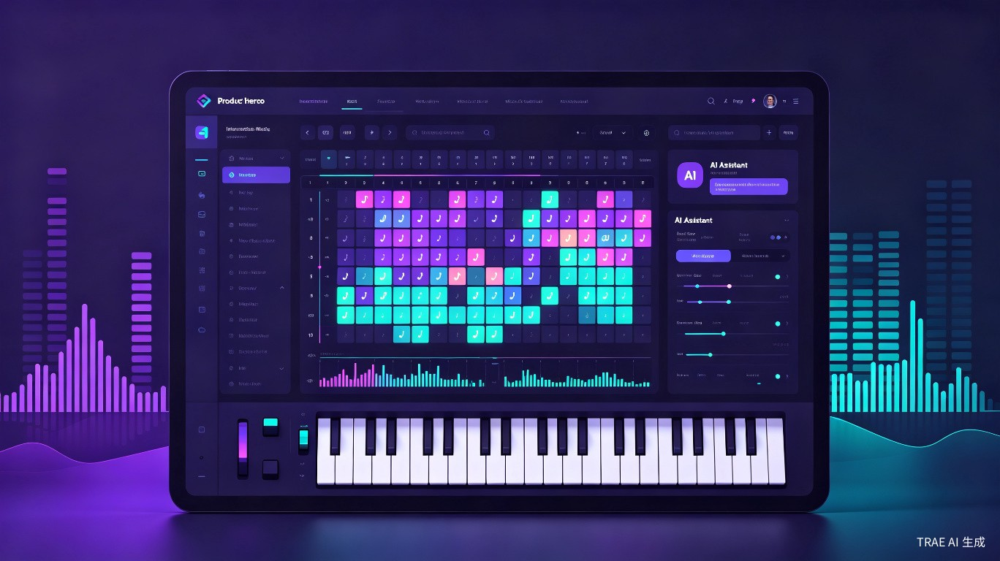
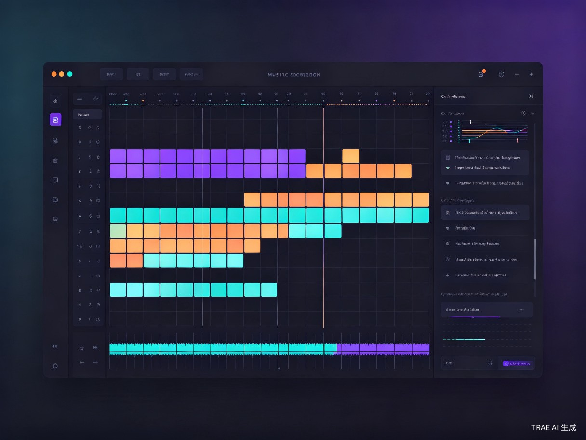
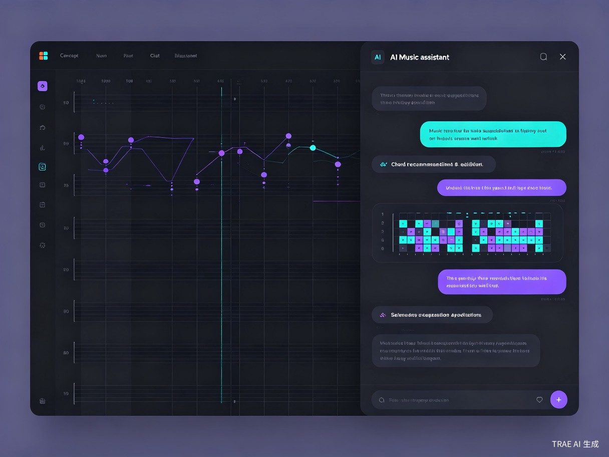

GridTone
基于可视化网格与乐理数据流驱动的交互式智能数字音乐创作程序 — 产品需求文档

需求背景
市场现状与触发来源
数字音乐创作正经历一场参与门槛的剧烈下移。Suno 在 2026 年已拥有近 1 亿注册用户和 200 万付费订阅者，日均生成超 700 万首歌曲[1]。BandLab 将 AI 深度嵌入完整 DAW 制作流程，免费层无限项目加云存储的策略覆盖了大量入门用户[2]。与此同时，Ableton Live 12 引入了全局音阶感知和 MIDI 生成器，Logic Pro 12 推出了 Chord Track 和 AI Session Player，Scaler 3 从单一乐理插件进化为带多轨时间线的独立编曲环境[3][4]。
然而，这些产品各自只解决了问题的一部分。传统 DAW（Ableton、FL Studio、Logic Pro）的乐理辅助正在快速增强，但界面复杂度和学习曲线依然让零基础用户望而却步。AI 音乐生成工具（Suno、Udio、AIVA）将创作门槛降至"输入文字即可出歌"，但创作者对旋律、和弦、节奏的精细控制权几乎为零。乐理辅助插件（Scaler 3、Hooktheory）提供了优秀的和弦推荐和理论指导，却缺乏完整的编曲环境和实时音频反馈。
用户当前状态与痛点
专业制作人在面对多曲风尝试和复杂和弦编排时，依赖手动推导和弦替代、转调路径和旋律走向，效率低下且容易陷入灵感枯竭。现有 AI 工具的"一键生成"模式无法执行"把第三小节的 Cmaj7 换成 Cm9，同时让贝斯线走一个下行音阶"这类精细指令[5]。
音乐爱好者面对传统 DAW 的多轨时间线、混音台、效果器链等专业概念，缺乏直观的入口。乐理学习依赖抽象的教材和枯燥的练习，缺少"边做边学"的即时反馈环境。Hooktheory 的 TheoryTab 数据库收录了 73,000+ 首歌曲的和弦分析[6]，但用户仍需在浏览器和 DAW 之间反复切换，体验断裂。
不解决的后果
如果当前格局持续不变，数字音乐创作将长期分裂为两个互不相通的世界：一端是专业 DAW 的"高门槛精确控制"，另一端是 AI 生成器的"低门槛零控制"。大量具备创作热情但缺乏技术背景的音乐爱好者将被持续排除在创作之外；专业制作人则继续在机械性的和弦推导和工程配置上消耗大量时间，无法专注于核心的情感表达。
目标用户与场景
独立音乐制作人 / 游戏音频设计师
专业用户具备 DAW 基础操作能力，熟悉至少一种主流 DAW。日常需要快速构建 Demo 框架、尝试不同曲风、为游戏/视频配乐。痛点在于和弦推导和风格化框架搭建耗时过长，现有 AI 工具无法执行精细修改指令。
核心诉求：效率提升 — 用分钟级操作替代小时级的手工编排，同时保留对每个音符的最终控制权。
音乐爱好者 / 零基础创作者
大众用户对音乐创作有强烈兴趣，但不具备乐理基础和 DAW 操作经验。可能尝试过 Suno 等工具但觉得"不是自己在创作"，也可能打开过 Ableton 但被界面劝退。渴望一种能边玩边学、逐步理解音乐规律的创作方式。
核心诉求：降低门槛 — 在趣味交互中自然掌握和弦、节奏、旋律的基本规律，获得"这是我自己做的"的创作满足感。
核心使用场景
场景一：专业 Demo 快速构建
独立制作人接到一个 Synthwave 风格的游戏配乐需求。打开 GridTone，选择 120 BPM、A 小调，在网格上快速编排鼓点 Pattern，通过乐理面板拖拽一组和弦进行（Am → F → C → G），系统自动推荐调内旋律音符和贝斯线走向。在 AI 助手中输入"副歌部分加入一个上行的琶音，从 Am 到 E7"，助手在网格上生成建议方案，制作人微调后导出 MIDI 到 Ableton 做最终混音。整个过程从构思到 Demo 完成，控制在 30 分钟以内。
场景二：零基础探索式学习
音乐爱好者打开 GridTone，选择"流行"风格模板。系统加载一个预设的 C 大调四小节框架，网格上用颜色标注出当前和弦对应的可用音符。用户点击网格单元格试听不同音符的效果，逐渐理解"为什么这些音放在一起好听"。切换到 AI 助手，问"如果我想让这段旋律听起来更忧伤，应该怎么改？"助手解释可以尝试将大三和弦替换为小三和弦，并在网格上高亮显示建议的修改位置。用户试听后确认修改，在实践中学到了一个乐理概念。
产品定位与目标
一句话定位
GridTone 是一款面向桌面端（Windows / macOS）的交互式智能音乐创作工具，通过可视化网格编曲、底层乐理约束和AI 对话协同三者的深度融合，让零基础用户能"边玩边学"地创作音乐，让专业用户能"分钟级"地构建高质量 Demo。
产品目标
- 门槛目标：零乐理基础用户在 15 分钟内完成第一段可播放的四小节旋律编排
- 效率目标：专业用户在 30 分钟内完成一个包含和弦进行、旋律线、贝斯线和鼓点的完整 Demo 框架
- 学习目标：用户在持续使用 2 周后，能独立理解并运用基础和弦进行（I-IV-V-I、i-iv-V-i）和音阶概念
- 质量目标：MVP 阶段生成的 MIDI 编曲方案，在导入主流 DAW 后可直接用于商业 Demo 级别的制作
竞品分析
竞争格局总览
GridTone 面对的竞争环境可以分为三个象限：传统 DAW（高控制、高门槛）、AI 生成器（低控制、低门槛）、乐理辅助工具（中等控制、中等门槛）。GridTone 的定位是高控制 + 低门槛 — 这个象限目前没有产品充分占据。
传统 DAW 竞品
| 维度 | Ableton Live 12 | FL Studio 2025 | Logic Pro 12 |
|---|---|---|---|
| 定价 | $99–$749 一次性 | $99–$449 一次性（终身更新） | $199.99 一次性（仅 Mac） |
| 乐理辅助 | 全局音阶感知 + MIDI 生成器（15 种和弦类型） | Gopher AI 助手可回答乐理问题，无和弦轨道 | Chord ID 音频识别 + 全局 Chord Track + Session Player 自动跟随 |
| AI 集成 | Stem 分离（Music.AI）、MIDI 生成器 | Gopher 嵌入式 AI 助手 + AI Deverb | Chord ID + Session Player + Stem Splitter + Apple Intelligence |
| 学习门槛 | 中等 | 较低 | 较高 |
| 核心差距 | 无对话式 AI；Session View 对新手仍不够直观 | 无和弦轨道和乐理约束系统 | 仅限 Mac 平台；功能密集导致界面复杂 |
AI 音乐生成竞品
| 维度 | Suno V5.5 | Udio | AIVA | BandLab |
|---|---|---|---|---|
| 用户规模 | 近 1 亿注册，200 万付费 | [To be confirmed] | [To be confirmed] | [To be confirmed] |
| 定价 | $0 / $10 / $30 月 | $0 / $10 / $30 月 | $0 / $11 / $33 月 | $0 / $14.95 月 |
| 用户可控性 | 中等（V5.5 结构锚定） | 中高（Inpainting + Session Workspace） | 中高（影响滑块 + MIDI 导出） | 最高（完整 DAW + AI 辅助） |
| 精细化编辑 | 低 | 中等 | 中等（依赖 DAW 后期） | 最高 |
| 乐理支持 | 低-中 | 低-中 | 最高（乐理训练基础） | 中-高 |
| 核心差距 | 黑盒生成，无法精细控制音符 | 母带质量不稳定，无乐理参数 | 无人声，流行风格弱 | 乐理辅助弱，无和弦推荐系统 |
乐理辅助竞品
| 维度 | Scaler 3 | Hooktheory (Hookpad) | Odesi | Soundtrap 2.0 |
|---|---|---|---|---|
| 定价 | $79 一次性 | $4.99/月 或 $149 终身 | $49 一次性 | $0 / $9.99–$14.99 月 |
| 乐理能力 | 最强（检测 + 推荐 + Explore + Colors + 转调路径） | 强（智能和弦面板 + 73K 数据库 + Aria AI） | 中等（和弦进行 + 调性检测） | 弱（无专门乐理系统） |
| 运行方式 | 独立应用 + DAW 插件 | 纯浏览器 | 独立应用 | 云端 + 桌面应用 |
| 核心差距 | 无对话式 AI；独立模式无 MIDI Out | 界面陈旧；纯浏览器限制 | 功能基础；更新频率低 | 无乐理约束；偏入门级 |
竞品研究结论
当前市场存在一个清晰的机会窗口：没有产品同时做到"可视化网格交互 + 深度乐理约束 + AI 对话协同"。Scaler 3 在乐理深度上领先，但缺乏 AI 对话和实时音频反馈；BandLab 在 DAW+AI 融合上走得最远，但乐理辅助几乎为零；Suno 在用户规模上碾压，但用户对输出的控制权极其有限。GridTone 的差异化定位是占据这个"三合一"的空白地带。
功能需求
功能总览
| # | 功能模块 | 功能描述 |
|---|---|---|
| F1 | 可视化网格编曲器 | 基于步进音序器理念的多轨网格界面，用户通过点击/拖拽网格单元格来编排音符、和弦、鼓点。网格按音高（纵轴）和节拍（横轴）组织，支持多轨道分层（旋律、和弦、贝斯、鼓组）。每个网格单元格可激活/取消，激活时发出对应音高和时值的音频。支持 BPM 调节、拍号设置、小节循环播放。 |
| F2 | 乐理约束引擎 | 底层乐理系统实时约束用户的编曲操作。用户设定调性和音阶后，网格上自动高亮标注"调内音"和"调外音"，调外音以不同颜色/透明度区分。和弦面板显示当前调性下所有可用的和弦（自然和弦、借用和弦、副属和弦等），支持一键替换和弦进行。系统基于音乐理论规则推荐和弦连接、旋律走向和贝斯线方案。 |
| F3 | 和弦数据库与推荐 | 内置和弦进行数据库，按风格（流行、爵士、电子、古典等）和情绪（明亮、忧伤、紧张、放松等）分类。用户可浏览预设和弦进行并一键应用到网格。支持基于当前和弦的"智能推荐"：系统分析上下文，推荐下一个最合适的和弦，并解释推荐理由（如"V → vi 是常见的欺骗终止"）。 |
| F4 | AI 对话助手 | 内置 AI 对话面板，用户可以用自然语言描述创作意图（如"副歌部分加一个渐强的弦乐铺垫"或"把这段旋律改成小调"），AI 助手理解指令后在网格上生成可视化建议方案。用户可以选择接受、部分接受或拒绝。AI 助手同时具备乐理解答能力，可解释当前编曲中的乐理概念。 |
| F5 | 模板与预设系统 | 提供按风格分类的项目模板（Synthwave、Lo-Fi、Techno、Ambient、Pop 等），每个模板预设好典型的 BPM、调性、轨道配置和基础 Pattern。用户可从模板出发快速修改，降低"空白项目"的启动焦虑。 |
| F6 | MIDI 导入/导出 | 支持将网格编曲内容导出为标准 MIDI 文件，可在 Ableton Live、Logic Pro、FL Studio 等任意 DAW 中打开继续制作。支持导入外部 MIDI 文件到网格进行可视化编辑和乐理分析。 |
| F7 | 音频预览引擎 | 内置音色引擎，为网格中的每个轨道提供基础音色预览（钢琴、合成器 Pad、贝斯、鼓组等），用户无需外部音源即可实时听到编曲效果。音色库侧重于电子音乐常用音色，覆盖 MVP 阶段目标风格。 |
F1 可视化网格编曲器 — 详细设计

业务逻辑
网格编曲器是 GridTone 的核心交互界面。系统维护一个多轨道项目，每个轨道对应一种乐器角色（旋律、和弦 Pad、贝斯、鼓组等）。每个轨道在时间轴上划分为等长的步进格子（默认 16 步 = 1 小节，4/4 拍），纵轴按音高排列（鼓组轨道按乐器组件排列）。用户通过鼠标点击激活/取消格子，激活的格子在播放时触发对应音符。播放头按 BPM 设定循环移动，经过激活格子时发出声音。
交互逻辑
- 单击格子：激活/取消该音符，立即播放预览音
- 拖拽选择：框选多个格子批量激活/取消
- 右键格子：弹出上下文菜单（修改力度、删除、复制到其他位置）
- 播放/暂停：点击播放按钮或按空格键，播放头从当前位置开始循环
- BPM 调节：顶部控制栏拖拽滑块或直接输入数值，范围 60–200 BPM
- 轨道管理：左侧轨道列表支持添加/删除/静音/独奏轨道
规则约束
- 音高范围：每个旋律轨道覆盖 C2–C6（5 个八度），鼓组轨道使用固定打击乐组件映射
- 步进精度：支持 1/16、1/8、1/4 三种步进分辨率
- 小节数：MVP 阶段支持 4–32 小节
- 轨道数：MVP 阶段最多 8 轨
边界与异常
- 空项目状态：显示引导提示"选择一个模板开始，或从空白项目创建"
- 播放时编辑：支持实时编辑，修改在下一个播放循环生效
- 性能保护：当激活音符密度超过阈值时，提示"音符过多可能导致音频卡顿"
F2 乐理约束引擎 — 详细设计
业务逻辑
乐理约束引擎是 GridTone 的核心差异化能力。用户在项目级别设定调性（如 A 小调）和音阶类型（自然小调、和声小调、多利亚等）后，系统在整个项目生命周期中维持一套乐理规则。这些规则作用于网格显示（调内/调外音的视觉区分）、和弦面板（可用和弦的过滤和推荐）、以及 AI 助手的建议生成。
交互逻辑
- 调性选择：顶部控制栏的下拉菜单，支持 12 个调 × 多种音阶类型
- 网格视觉反馈：调内音格子在激活时显示为亮色（accent2），调外音显示为暗色并带有半透明遮罩
- 和弦面板：右侧面板显示当前调性下所有可用和弦，按功能分组（主和弦、属和弦、下属和弦、借用和弦等）
- 和弦替换：从和弦面板拖拽和弦到网格的和弦轨道，自动替换当前小节的和弦
乐理规则覆盖（MVP 阶段）
| 规则类别 | MVP 覆盖范围 |
|---|---|
| 音阶与调性 | 大调、自然小调、和声小调、多利亚、混合利底亚、弗里几亚 |
| 三和弦 / 七和弦 | 当前调性下所有自然三和弦和七和弦，含转位 |
| 和弦进行 | I-IV-V-I、I-vi-IV-V、ii-V-I、i-iv-V-i 等 12 组预设进行 |
| 和弦功能分析 | 主功能（T）、下属功能（S）、属功能（D）的自动标注 |
| 旋律音约束 | 调内音高亮、引导音（chord tone + passing tone）建议 |
F4 AI 对话助手 — 详细设计

业务逻辑
AI 对话助手以侧边面板形式嵌入主界面，用户可以用自然语言与系统交互。助手接收用户的创作指令或乐理问题，结合当前项目的调性、音阶、已有编曲内容等上下文信息，生成具体的网格操作建议或文字解答。所有建议以可视化方式呈现在网格上，用户确认后才真正修改项目数据。
交互逻辑
- 输入方式：底部文本输入框，支持回车发送
- 建议呈现：AI 生成的编曲建议以"预览层"叠加在网格上（用虚线框或不同颜色标注），用户可点击"应用"或"拒绝"
- 乐理解答：以文字回复为主，必要时在网格上高亮对应位置辅助说明
- 上下文感知：助手始终知道当前项目的调性、BPM、已编排内容，无需用户重复描述
支持的指令类型（MVP 阶段）
| 指令类型 | 示例 | 系统行为 |
|---|---|---|
| 和弦修改 | "把第三小节的和弦换成 Am7" | 在网格和弦轨道上预览 Am7 替换方案 |
| 旋律生成 | "在副歌部分生成一个上行的旋律线" | 在旋律轨道生成调内音符序列预览 |
| 风格调整 | "让鼓点更有 Techno 的感觉" | 调整鼓组 Pattern，增加底鼓密度 |
| 乐理解答 | "为什么 V → vi 听起来有意外感？" | 文字解释欺骗终止的概念 |
| 整体建议 | "这段编曲听起来太单调，怎么丰富？" | 分析当前编曲密度，建议添加副旋律或变化 |
规则约束
- 所有 AI 建议均为"预览"状态，必须经用户确认才写入项目
- AI 生成的音符始终遵守当前项目的乐理约束（调性、音阶）
- 对话历史保留当前会话，项目关闭后清除
边界与异常
- AI 无法理解指令时：提示"请尝试更具体的描述，例如指定小节位置或乐器类型"
- 网络不可用时：AI 助手面板显示"需要网络连接"，其余编曲功能不受影响
- 生成超时：超过 10 秒未返回时，显示加载动画并提示"正在思考中..."
信息架构
graph TD
subgraph "GridTone 主界面"
A["顶部控制栏
调性 / BPM / 拍号 / 播放控制"] --> B["主工作区"]
C["AI 对话面板
右侧侧边栏"] --> B
D["和弦面板
左侧侧边栏"] --> B
end
subgraph "主工作区 B"
E["轨道列表
旋律 / 和弦 / 贝斯 / 鼓组"] --> F["网格编辑区
步进音序器"]
G["时间轴
小节 / 拍号标尺"] --> F
end
subgraph "底部工具栏"
H["模板选择"] --> I["MIDI 导入/导出"]
I --> J["音色选择"]
J --> K["设置"]
end
B --> H
界面布局说明
顶部控制栏
全局参数控制：调性/音阶选择、BPM 调节（60–200）、拍号设置（4/4、3/4、6/8）、播放/暂停/停止、循环范围设置。始终可见，不随滚动隐藏。
左侧和弦面板
当前调性下可用和弦列表，按功能分组显示。支持拖拽和弦到网格。底部显示和弦进行预设库入口。可折叠。
中央网格编辑区
多轨道步进音序器，纵轴音高、横轴时间步进。调内音/调外音颜色区分。支持单击、拖拽、右键菜单操作。播放头实时移动。
右侧 AI 面板
对话式 AI 助手，文本输入 + 建议预览。AI 生成的编曲修改以预览层叠加在网格上。可折叠。离线时显示连接提示。
MVP 范围与路线图
MVP 核心范围
| 模块 | MVP 包含 | MVP 不包含 |
|---|---|---|
| 网格编曲器 | 多轨步进网格（最多 8 轨）、BPM 调节、4/4 拍、16 步分辨率、播放/暂停/循环 | 多拍号支持、自由节奏绘制、音频录音、自动化曲线 |
| 乐理约束 | 6 种音阶、自然和弦识别与高亮、12 组预设和弦进行、和弦功能标注 | 借用和弦推荐、转调路径分析、复杂和声节奏 |
| AI 助手 | 基础对话能力：和弦修改、旋律生成建议、乐理解答 | 风格化指令（"更像 Techno"）、多轮迭代优化、情感分析 |
| 音色引擎 | 4 种基础音色（钢琴、合成器 Pad、贝斯、鼓组） | 第三方音源加载、音色设计、效果器链 |
| 导入/导出 | MIDI 导出（标准 Format 0/1） | MIDI 导入、音频导出（WAV/MP3）、项目文件保存 |
| 模板 | 4 个风格模板（Pop、Lo-Fi、Synthwave、Techno） | 用户自定义模板、模板编辑器 |
分阶段路线图
MVP 阶段
可视化网格 + 乐理约束
基础 AI 对话 + MIDI 导出
4 种音色 + 4 个模板
Beta 阶段
AI 助手增强（风格化指令）
MIDI 导入 + 项目保存
音色库扩展至 12 种
8 个风格模板
v1.0 正式版
音频录音 + 音频导出
第三方音源加载（VST）
高级乐理（借用和弦、转调）
用户自定义模板
Scale 阶段
在线协作编曲
社区模板市场
移动端预览应用
教育课程体系
数据指标
核心指标
| 指标类别 | 指标名称 | 定义 | 目标值 |
|---|---|---|---|
| 采纳指标 | 首次编曲完成率 | 新用户首次打开后 30 分钟内完成至少 4 小节可播放编曲的比例 | [To be confirmed] |
| 7 日留存率 | 首次使用后第 7 天再次打开应用的用户比例 | [To be confirmed] | |
| 模板使用率 | 新项目中选择模板启动的比例（vs 空白项目） | [To be confirmed] | |
| 功能使用 | 乐理面板使用率 | 单次会话中使用和弦面板拖拽/替换操作的用户比例 | [To be confirmed] |
| AI 助手使用率 | 单次会话中向 AI 助手发送至少 1 条消息的用户比例 | [To be confirmed] | |
| AI 建议采纳率 | AI 生成的编曲建议中，用户点击"应用"的比例 | [To be confirmed] | |
| 质量指标 | MIDI 导出率 | 单次会话中执行 MIDI 导出的比例 | [To be confirmed] |
| 编曲时长中位数 | 从创建项目到导出 MIDI 的时长中位数 | [To be confirmed] |
埋点追踪
| 事件名称 | 触发时机 | 关键属性 | 决策用途 |
|---|---|---|---|
| project_created | 用户创建新项目 | source（模板/空白）、style（模板风格） | 评估模板系统的引导效果 |
| note_placed | 用户在网格上激活音符 | track_type、pitch、beat_position、in_scale（是/否） | 评估乐理约束对用户行为的实际影响 |
| chord_replaced | 用户从和弦面板拖拽替换和弦 | from_chord、to_chord、bar_position | 评估和弦推荐系统的使用频率 |
| ai_message_sent | 用户向 AI 助手发送消息 | message_type（和弦/旋律/乐理/风格） | 评估 AI 助手的使用场景分布 |
| ai_suggestion_applied | 用户应用 AI 建议 | suggestion_type、notes_changed_count | 评估 AI 建议的质量和用户信任度 |
| midi_exported | 用户导出 MIDI 文件 | track_count、bar_count、duration_minutes | 评估产品的实际产出能力和用户完成度 |
依赖与风险
技术依赖
| 依赖项 | 类型 | 说明 | 风险等级 |
|---|---|---|---|
| 音频引擎 | 技术选型 | 需要选择或开发低延迟音频引擎，支持实时音符播放和多轨混音 | 高 |
| AI 模型服务 | 外部 API | AI 对话助手依赖大语言模型 API，需要评估延迟、成本和可用性 | 高 |
| 乐理数据库 | 内部开发 | 和弦进行数据库、音阶规则库需要音乐理论专业知识构建 | 中 |
| 跨平台框架 | 技术选型 | 需同时支持 Windows 和 macOS，考虑 Electron / Qt / Tauri 等方案 | 中 |
| MIDI 解析/生成 | 开源库 | 标准 MIDI 文件的读写，可基于开源库实现 | 低 |
核心风险
| 风险 | 概率 | 影响 | 缓解策略 |
|---|---|---|---|
| 音频延迟过高 网格点击到声音输出的延迟超过 50ms，破坏实时交互体验 |
中 | 高 | PoC 阶段优先验证音频引擎延迟；备选方案包括预渲染 + 缓冲策略 |
| AI 建议质量不稳定 AI 生成的编曲建议不符合乐理规则或用户意图 |
高 | 高 | AI 输出经过乐理约束引擎二次校验；用户必须确认才写入；提供"反馈"机制持续优化 |
| 乐理规则覆盖不足 MVP 的 6 种音阶和 12 组进行无法满足用户需求 |
中 | 中 | 通过埋点追踪用户最常使用的音阶和进行，优先扩展高频需求 |
| 跨平台兼容问题 音频驱动、MIDI 设备在 Win/Mac 上行为不一致 |
中 | 中 | MVP 阶段优先保证核心功能在两个平台上一致；音频设备兼容列表明确标注 |
验收标准
| # | 验收项 | 通过标准 |
|---|---|---|
| A1 | 网格编曲基础功能 | 用户可在 8 轨 × 16 步网格上完成音符编排，播放延迟 ≤ 30ms，BPM 调节实时生效 |
| A2 | 乐理约束生效 | 设定调性后，网格上 100% 正确标注调内/调外音；和弦面板显示的可用和弦与调性完全匹配 |
| A3 | 和弦进行应用 | 用户从预设库选择和弦进行后，网格和弦轨道正确更新，播放效果与预期一致 |
| A4 | AI 助手基础对话 | 用户发送和弦修改/旋律生成指令后，AI 在 10 秒内返回可视化建议，建议遵守当前乐理约束 |
| A5 | MIDI 导出正确性 | 导出的 MIDI 文件在 Ableton Live / Logic Pro / FL Studio 中打开后，音符位置、时值、轨道分配与 GridTone 中一致 |
| A6 | 模板加载 | 4 个风格模板加载后，BPM、调性、轨道配置、基础 Pattern 均正确初始化，可立即播放 |
| A7 | 跨平台一致性 | Windows 和 macOS 上核心功能（网格编曲、乐理约束、MIDI 导出）行为一致，无平台特有 Bug |